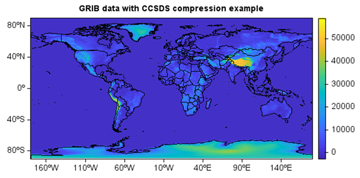
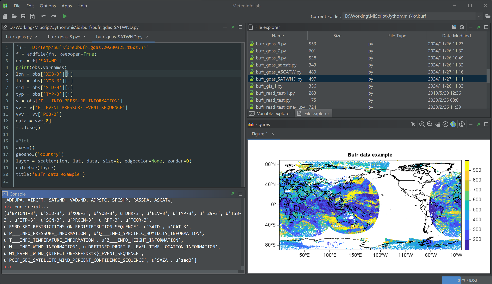

MeteoInfo 4.0 was released (2025-3-26)¶
Support GRIB data with CCSDS compression
Better Bufr data support including multi-category messages in one data file
Support avoiding collapse of x-axis labels in ProjLonLatAxis class
Add fft package for fast fourier transformation
Add frombuffer function to create ndarray object
Add cross_section function in meteolib package
Update XYZ tile layer base URL similar with QGIS
Update netcdf-java to version 5.8.0-SNAPSHOT
Update flatten and ravel functions
Update WebImage plot function
update Jython to version 2.7.4;
update flatlaf to version 3.5.4
Some other bugs fixed
Fast Fourier Transformation example¶
#Read image
fn = os.path.join(migl.get_sample_folder(), 'image', 'Lenna.png')
lena = imagelib.imread(fn)
img = imagelib.gray_scale(lena)[:,:,0]
#FFT
f = np.fft.fft2(img)
fshift = np.fft.fftshift(f)
res = np.log(np.abs(fshift))
#Invert FFT
ishift = np.fft.ifftshift(fshift)
iimg = np.fft.ifft2(ishift)
iimg = np.abs(iimg)
#Plot
subplot(1,3,1,axis=False,aspect='equal')
imshow(img, cmap='cmocean_gray'), title('Original Image')
subplot(1,3,2,axis=False,aspect='equal')
imshow(res, cmap='cmocean_gray'), title('Fourier Image')
subplot(1,3,3,axis=False,aspect='equal')
imshow(iimg, cmap='cmocean_gray'), title('Inverse Fourier Image')
Read GRIB data with CCSDS compression¶
fn = r'D:/Temp/grib/ecmwf/20250106180000-0h-oper-fc.grib2'
f = addfile(fn)
data = f['Geopotential_surface'][0]
axesm()
geoshow('country')
imshow(data)
colorbar()
title('GRIB data with CCSDS compression example')

Read prepbufr data file¶
fn = 'D:/Temp/bufr/prepbufr.gdas.20230325.t00z.nr'
f = addfile(fn, keepopen=True)
obs = f['SATWND']
print(obs.varnames)
lon = obs['XOB-3'][:]
lat = obs['YOB-3'][:]
sid = obs['SID-3'][:]
typ = obs['TYP-3'][:]
v = obs['P___INFO_PRESSURE_INFORMATION']
vv = v['P__EVENT_PRESSURE_EVENT_SEQUENCE']
vvv = vv['POB-3']
data = vvv[0]
f.close()
#Plot
axesm()
geoshow('country')
layer = scatter(lon, lat, data, size=2, edgecolor=None, zorder=0)
colorbar(layer)
title('Bufr data example')
